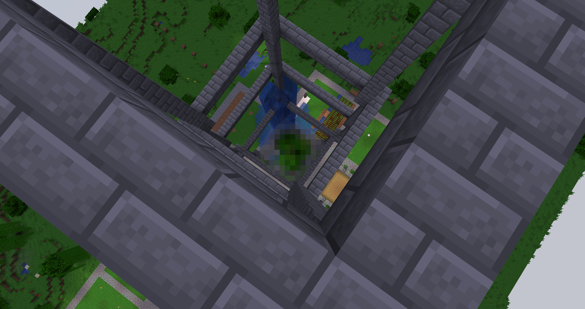
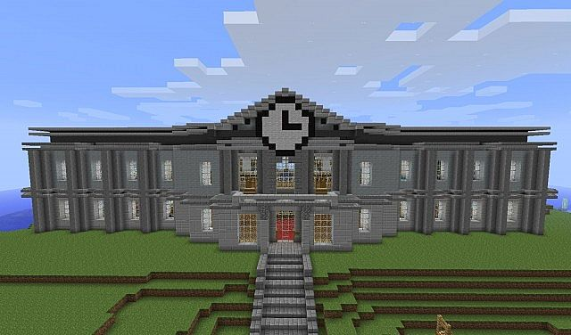

KKK Found outside of Hindustan!?

On CensoredArt's adventure to get spiders and money, he found something he shouldn't have. A KKK in minecraft outside of the local town. "Good thing no one was there." He says.
Free Speech illegal on Herobrine?!
Herobrine court once again has a meet deciding the freespeech rules on the server. They have voted that freespeech is not allowed currently. A few players have created statues to oppose to this rule. Here at CensoredMedia we are doing a petition for the rule to be lifted. Only time will tell what happens next. Stay Tuned.Builders Tower Construction Is Going Well!

The Building, By Surfy, A member of Hindustan on Herobrine.org, Started construction
on the overlooking, Mighty, Tower that we call Builders Tower!

The creator, Surfy on 4/12/2020
"It's pretty much a tower of my personality." Surfy Says.

Pictures of the inside of Builders Tower Are now illegal unless censored!
A recent meeting at the Herobrine Court has determined that and building of a certain height shall be censored in public photos. For the time being, Builders Tower has to be censored.
